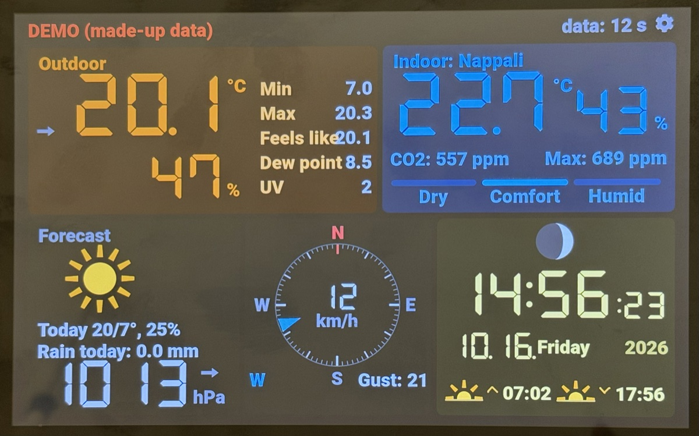

Ecowitt Weather Display
Touchscreen weather display for Ecowitt stations – local, no cloud. Firmware v1.3.1.
Érintőképernyős időjárás-kijelző Ecowitt állomásokhoz – helyben, felhő nélkül. Program: v1.3.1.

Install from the browser
Connect the display to this computer with a USB cable, then click the button and choose the display's port. The right firmware is selected automatically from the chip.
Telepítés a böngészőből
Csatlakoztasd a kijelzőt USB-kábellel ehhez a géphez, kattints a gombra, és válaszd ki a kijelző portját. A megfelelő programot a lapka alapján magától választja ki.
Your browser does not support Web Serial: use Chrome or Edge on a computer. / A böngésződ nem támogatja a Web Serialt: használj Chrome-ot vagy Edge-et számítógépen.
The page must be opened over HTTPS. / Az oldalt HTTPS-en kell megnyitni.
The installer asks whether to erase the device first. For a new display choose yes. For a display
already in use choose no: then the history (graphs) stays, but the settings (location, time zone, …) are still reset.
Erasing deletes everything except, on the P4, the WiFi network (the WiFi chip keeps it).
A running display is better updated on its own web page (keeps everything):
upload the …-ota.bin file from the release.
A telepítő megkérdezi, hogy előbb törölje-e az eszközt. Új kijelzőnél válaszd az igent. Már
használt kijelzőnél a nemet: akkor az előzmény (a grafikonok) megmarad, de a beállítások (hely, időzóna, …) így is
alaphelyzetbe kerülnek. A törlés mindent töröl, kivéve a P4-en a WiFi-hálózatot (azt a WiFi-csip tárolja).
A működő kijelzőt inkább a saját webes kezelőoldalán frissítsd (mindent megtart): a
kiadás …-ota.bin fájlját kell feltölteni.
Supported displays
| Display | Chip | Resolution |
|---|---|---|
| Waveshare ESP32-S3-Touch-LCD-7B (7") | ESP32-S3, 16 MB flash, 8 MB PSRAM | 1024x600 |
| Guition JC8012P4A1C_I_W_Y (10.1") | ESP32-P4 (chip revision v3) + ESP32-C6 | 1280x800 |
Any ESP32-S3 board gets the Waveshare 7B firmware, which only works on that display.
After installing
- The display opens the Weather-Setup WiFi network (on the P4: Weather-Setup-P4) and shows the steps with QR codes: connect with a phone, the setup page opens by itself (or open http://192.168.4.1/), and choose your network.
- Open the display's web page (the address is shown in its top line) and set the location and the rooms.
- In the Ecowitt app (Weather Services → Customized): protocol Ecowitt, the display's IP address, path
/ecowitt, port 80.
Details, building from source and the source code: GitHub (GPL-3.0).
Támogatott kijelzők
| Kijelző | Lapka | Felbontás |
|---|---|---|
| Waveshare ESP32-S3-Touch-LCD-7B (7") | ESP32-S3, 16 MB flash, 8 MB PSRAM | 1024x600 |
| Guition JC8012P4A1C_I_W_Y (10,1") | ESP32-P4 (v3-as lapka) + ESP32-C6 | 1280x800 |
Bármely ESP32-S3-as lap a Waveshare 7B programját kapja, ami csak azon a kijelzőn működik.
Telepítés után
- A kijelző elindítja a Weather-Setup WiFi-hálózatot (a P4-en: Weather-Setup-P4), és QR-kódokkal mutatja a lépéseket: csatlakozz rá telefonnal, a beállító oldal magától megnyílik (vagy nyisd meg: http://192.168.4.1/), és válaszd ki a hálózatodat.
- Nyisd meg a kijelző webes kezelőoldalát (a címe a kijelző felső sorában látszik), és állítsd be a helyet és a helyiségeket.
- Az Ecowitt-appban (Weather Services → Customized): Ecowitt protokoll, a kijelző IP-címe, útvonal
/ecowitt, port 80.
Részletek, fordítás forrásból és a forráskód: GitHub (GPL-3.0).